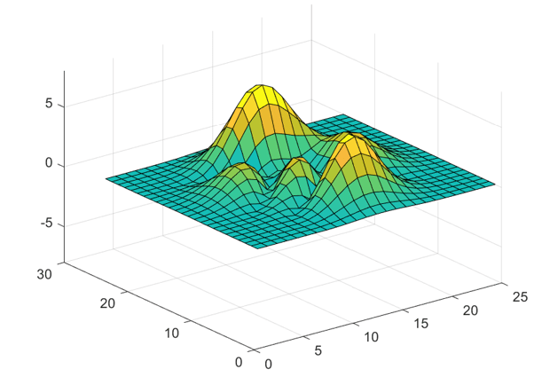
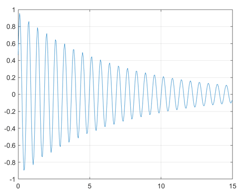

Read and Write Data Concurrently Using Single-Writer/Multiple-Reader (SWMR)
Overview
The Single-Writer/Multiple-Reader (SWMR) feature of the MATLAB® low-level HDF5 function interface allows you to append data to datasets or overwrite existing data while several reader processes concurrently read the new data from the file. The reader and writer processes can run on the same platform or different platforms, and no communication between the processes or file locking is needed.
To use SWMR, you must be familiar with the HDF5 SWMR programming model. For more information, see the HDF5 SWMR Feature Design and Semantics Document and the HDF5 SWMR User's Guide on The HDF Group website.
Note
MATLAB releases earlier than R2021b might not be able to read HDF5 files or objects created using R2021b or later releases due to the file format changes in HDF5 version 1.10. HDF5 files created with SWMR access are not compatible with versions of HDF5 prior to 1.10. Because the HDF5 library is always backward compatible, MATLAB R2021b and later releases can read and modify HDF5 files or objects created using any MATLAB release.
Requirements and Limitations
An HDF5 file with SWMR access must be located on a file system that complies with the Portable Operating System Interface (POSIX) write() semantics, and the writer and reader processes must follow the SWMR programming model.
SWMR is not supported on remote file locations.
You must follow the SWMR implementation scope:
The writer process is allowed to modify raw data of existing datasets only by:
Appending data along an unlimited dimension
Modifying existing data
The writer process is not allowed to:
Add new objects to or delete objects from the file. Such objects include groups, datasets, links, committed datatypes, and attributes.
Modify or append to any data items containing variable-size data types (including string data types).
File space recycling is not allowed. The size of a file modified by a SWMR writer may be greater than if a non-SWMR writer had modified the file.
For more information on SWMR requirements and limitations, see the HDF5 SWMR User's Guide on the HDF Group website.
Enable SWMR Access for HDF5 File
Follow these general steps in MATLAB to enable SWMR access in on HDF5 file:
Create the file with the latest file format by specifying the lower and upper bounds of the library version as
'H5F_LIBVER_LATEST'in the call to theH5P.set_libver_boundsfunction.H5P.set_libver_bounds(faplID,'H5F_LIBVER_LATEST','H5F_LIBVER_LATEST');
Enable SWMR write access for the HDF5 file and flush the dataset after each write operation.
Specify the flag
'H5F_ACC_SWMR_WRITE'in the call to theH5F.openfunction. For example, open the file with SWMR write access using the default property list settings.fileID = H5F.open(myFile,'H5F_ACC_RDWR|H5F_ACC_SWMR_WRITE','H5P_DEFAULT');
Alternatively, you can enable SWMR write access using the
H5F.start_swmr_writefunction.Flush the dataset after each write operation using
H5D.flush.
Enable SWMR read access for the HDF5 file and refresh the dataset before each read operation.
Open the file for SWMR read access by specifying the flag
'H5F_ACC_SWMR_READ'in the call to theH5F.openfunction. For example, open the file with SWMR read access using the default property list settings.fileID = H5F.open(myFile,'H5F_ACC_RDONLY|H5F_ACC_SWMR_READ','H5P_DEFAULT');
Refresh the dataset before each read operation using
H5D.refresh.
Write to HDF5 File While Two Processes Read
Use SWMR to write surface data to an HDF5 file, while one
reader process records peak data in a text file and another plots the surface
data over time. This example uses data generated from the MATLAB
peaks function.
This example defines three functions, writeData,
readPlot3D, and readLogger, which can
be run concurrently in an SWMR-enabled environment. You must run
writeData before readPlot3D and
readLogger to create the HDF5 file if it does not
exist.
Create a writer function named writeData that writes a
2-D array of data to an HDF5 file.
When you create the file, set the lower and upper library version bounds
to 'H5F_LIBVER_LATEST' in the call to the
H5P.set_libver_bounds function. Then, enable SWMR
write access to the file by specifying the flag
'H5F_ACC_SWMR_WRITE' in the call to the
H5F.open function.
Finally, flush the dataset after each write operation using
H5D.flush.
function writeData(dataFile) % Create HDF5 file if does not already exist, and initialize dataset. if ~exist(dataFile,'file') % Create file access property list, set library version flags, and create the file. faplID = H5P.create('H5P_FILE_ACCESS'); H5P.set_libver_bounds(faplID,'H5F_LIBVER_LATEST','H5F_LIBVER_LATEST'); fileID = H5F.create(dataFile,'H5F_ACC_TRUNC','H5P_DEFAULT',faplID); % Create and write dataset. datatypeID = H5T.copy('H5T_NATIVE_DOUBLE'); dataspaceID = H5S.create_simple(2,[25 25],[]); datasetID = H5D.create(fileID,'/peaks',datatypeID,dataspaceID,'H5P_DEFAULT'); H5D.write(datasetID,'H5ML_DEFAULT','H5S_ALL','H5S_ALL','H5P_DEFAULT',NaN(25)); % Close open resources. H5D.close(datasetID); H5S.close(dataspaceID); H5T.close(datatypeID); H5F.close(fileID); end % Open HDF5 file with support for SWMR write access and open dataset. fileID = H5F.open(dataFile,'H5F_ACC_RDWR|H5F_ACC_SWMR_WRITE','H5P_DEFAULT'); datasetID = H5D.open(fileID,'/peaks'); % Loop through writing Z data to file. for t = 0 : 0.05 : 15 Z = exp(-0.15*t) * sin(10*t) * abs(peaks(25)); H5D.write(datasetID,'H5ML_DEFAULT','H5S_ALL','H5S_ALL','H5P_DEFAULT',Z); % Flush data in the dataset after writing. H5D.flush(datasetID); pause(0.05); end % Close open resources. H5D.close(datasetID); H5F.close(fileID); end
Create a reader function named readPlot3D that plots
data stored in the /peaks dataset of the input HDF5
file.
Enable SWMR read access by specifying the flag
'H5F_ACC_SWMR_READ' in the call to the
H5F.open function. Refresh the data in the dataset
before each subsequent read.
function readPlot3D(dataFile) % Open HDF5 file with for SWMR read access and open dataset. h5FileID = H5F.open(dataFile,'H5F_ACC_RDONLY|H5F_ACC_SWMR_READ','H5P_DEFAULT'); datasetID = H5D.open(h5FileID,'/peaks'); % Loop through reading Z data from file and 3D plotting it. hSurf = []; for t = 0 : 0.05 : 15 % Refresh dataset before reading. H5D.refresh(datasetID); Z = H5D.read(datasetID,'H5ML_DEFAULT','H5S_ALL','H5S_ALL','H5P_DEFAULT'); if isempty(hSurf) % Create surface plot if not present. hSurf = surf(Z); zlim([-8 8]); clim([-5 5]); else % Update surface plot Z data otherwise. hSurf.ZData = Z; end pause(0.05); end % Close open resources H5D.close(datasetID); H5F.close(h5FileID); end
The readPlot3D function updates the plot with each
iteration, resulting in a surface plot similar to the following one.

Create a second reader function named readLogger that
reads the data in the /peaks dataset and logs the data
taken at one sampling point.
Enable SWMR read access by specifying the flag
'H5F_ACC_SWMR_READ' in the call to the
H5F.open function. Refresh the data in the dataset
before each subsequent read.
function readLogger(dataFile) % Open HDF5 file with SWMR read access and open dataset. h5FileID = H5F.open(dataFile,'H5F_ACC_RDONLY|H5F_ACC_SWMR_READ','H5P_DEFAULT'); datasetID = H5D.open(h5FileID,'/peaks'); % Open log file for saving records. recordFileID = fopen('logs.txt','w'); fprintf(recordFileID,'t,Zpeak\n'); % Loop through reading Z data from the file and recording central value. for t = 0 : 0.05 : 15 % Refresh dataset before reading. H5D.refresh(datasetID); Z = H5D.read(datasetID,'H5ML_DEFAULT','H5S_ALL','H5S_ALL','H5P_DEFAULT'); idx = round(size(Z,1)/2); fprintf(recordFileID,'%.3f,%.3f\n',t,Z(idx,idx)); pause(0.05); end % Close open resources. H5D.close(datasetID); H5F.close(h5FileID); fclose(recordFileID); end
The readLogger function writes data samples to a text
file named logs.txt. You can plot the data in
logs.txt to obtain the following figure.

See Also
Work with HDF5 Virtual Datasets (VDS) | Property (H5P) | Dataset (H5D) | File (H5F)